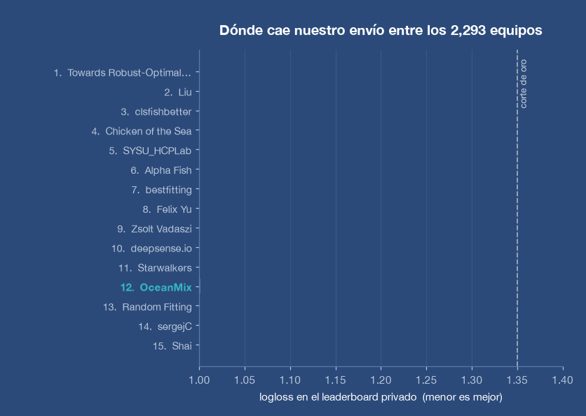
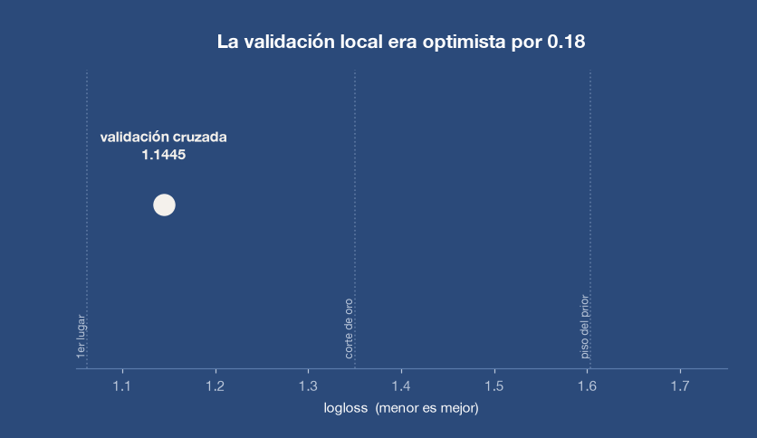

Cero anotaciones
El detector funciona por descripción en lenguaje natural. Las miles de horas de etiquetado manual que exigía el enfoque clásico dejan de ser necesarias.
Identificación automática de la especie capturada a partir de cámaras a bordo, sin una sola caja dibujada a mano. Un sistema de monitoreo pesquero que aprende a mirar el pez, no el barco.
El monitoreo pesquero depende de observadores humanos a bordo: caro, escaso y imposible de escalar. Las cámaras ya están instaladas en muchas flotas; lo que falta es leerlas.
Por qué es difícil
Las imágenes de cubierta vienen de un puñado de embarcaciones, y cada una pesca de forma distinta. Un modelo entrenado sin cuidado no aprende a distinguir especies: aprende a reconocer la cubierta, y con eso adivina la especie más probable de ese barco. Funciona en el laboratorio y colapsa en cuanto se despliega en una flota nueva.
Lo medimos sobre este conjunto de datos: agrupando las imágenes por embarcación, saber en qué barco fue tomada una foto entrega el 50 % de la información sobre qué especie contiene. Es un atajo que el modelo tomará si se lo permitimos.
Una validación mal diseñada, que reparte imágenes del mismo barco entre entrenamiento y prueba, reporta un error diez veces menor que el real. Toda nuestra validación separa embarcaciones completas.

Primero encontrar el pez, después identificarlo. Separar esos dos pasos es lo que hace que el sistema sobreviva al cambio de flota.
Paso 1 · Localización sin anotaciones
Usamos un detector de vocabulario abierto (OWLv2) al que simplemente se le pide «un pez» en lenguaje natural. No requiere ni una sola caja anotada a mano: reconoce el objeto sin haber visto jamás este conjunto de datos. Sobre la imagen completa, el animal ocupa una mediana del 2.96 % del cuadro — el resto es cubierta, redes, tripulación y mar.

El detector funciona por descripción en lenguaje natural. Las miles de horas de etiquetado manual que exigía el enfoque clásico dejan de ser necesarias.
La tasa de detección no se degrada al cambiar de embarcación: sube del 74 % en las imágenes conocidas al 83 % en la flota nunca vista.
La confianza del detector distingue por sí sola las imágenes sin captura, con un 68 % de acierto — por encima del sistema ganador del certamen.
Paso 2 · Identificación de especie
Sobre el recorte entrenamos una red convolucional moderna (ConvNeXt). Al eliminar el contexto de la cubierta, el atajo desaparece: el modelo ya no puede adivinar por el barco y se ve obligado a mirar el animal.
El efecto es la mayor ganancia de todo el sistema, y se sostiene en las cinco particiones de validación sin excepción. El resto —combinar dos vistas, incorporar la evidencia del detector, calibrar— aporta mejoras reales pero menores.

Medimos el sistema contra un estándar público: el certamen de monitoreo pesquero de The Nature Conservancy, donde 2,293 equipos compitieron sobre exactamente estos datos.

El sistema alcanza un error de 1.32445 sobre el conjunto de prueba reservado, que sitúa el resultado en la duodécima posición de la tabla final, dentro del rango que obtuvo medalla de oro.
Nota: el certamen cerró en 2017. Nuestro envío es posterior y se evalúa con los mismos datos reservados y la misma métrica, pero no figura en la tabla oficial ni constituye una posición competitiva. La comparación es una referencia técnica, no un resultado de competencia.
La especie que ningún equipo resolvió, por su parecido con la albacora. Nuestro sistema la identifica casi cinco veces mejor que la solución ganadora, y representa el 11 % de las capturas evaluadas.
Distinguir cuándo no hay pez es esencial para no inflar los conteos. Acertamos el 68 %, frente al 62 % del sistema ganador, apoyados en el detector.
Los equipos de 2017 anotaron miles de cajas a mano. Nuestro sistema no usó ninguna: la localización es completamente automática.
El hallazgo más útil del proyecto no es el resultado, sino la distancia entre lo que la validación prometía y lo que la realidad entregó.
Honestidad metodológica
Nuestra validación interna —ya diseñada con cuidado, separando embarcaciones completas— anticipaba un error de 1.14. El valor real sobre la flota desconocida fue 1.32. Una brecha de 0.18 que ninguna precaución interna logró cerrar.
Esa distancia es la medida honesta de cuánto se degrada un modelo al salir al mundo, y es exactamente el tipo de número que hay que conocer antes de desplegar un sistema en operación real. Reportarlo importa tanto como el resultado.
Este marco de validación —separar por sitio, por campaña o por embarcación, nunca al azar— es el mismo que aplicamos a los modelos de monitoreo de macroalgas y a la calibración de modelos numéricos.

La capacidad desarrollada es transferible a los sistemas costeros donde trabajamos.
Registro automático de especie y volumen a bordo, para complementar el trabajo de observadores y ampliar la cobertura de las flotas.
El mismo enfoque de detección sin anotaciones aplica al reconocimiento de macroalgas y organismos no nativos en imagen submarina y aérea.
Procesar archivos históricos de video y fotografía permite reconstruir series de tiempo que hoy están guardadas pero sin leer.
Visualizaciones del sistema y de sus resultados.